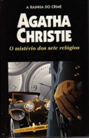

O Mistério dos Sete Relógios
The Seven Dials Mystery
Sete esferas referentes a sete relógios constituem o cerne desta misteriosa aventura, que envolve uma extravagante organização secreta e põe em cena três deliciosos personagens de Agatha Christie: o esperto superintendente Battle da Scotland Yard, o simpático Lorde Caterham, dono do célebre palácio de Chimneys, e sua encantadora e corajosa filha Eileen. Juntos, eles vão ter que enfrentar um dos mais hábeis e cruéis assassinos de que já se teve notícia, criado pela imaginação inesgotável da “velha dama” britânica.